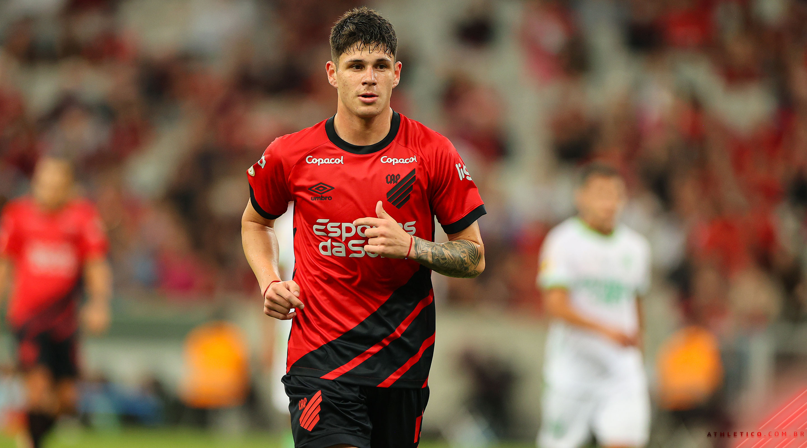
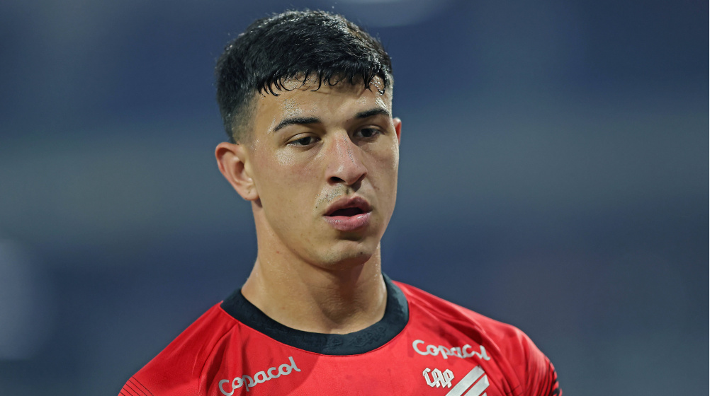
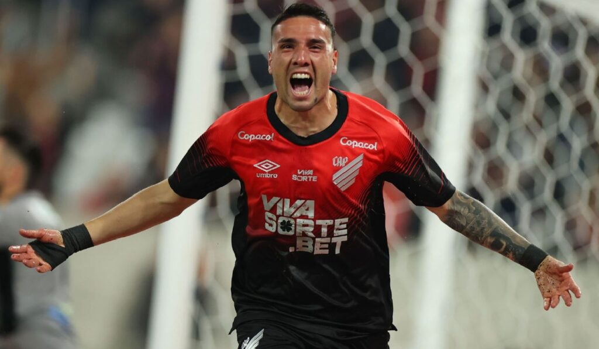
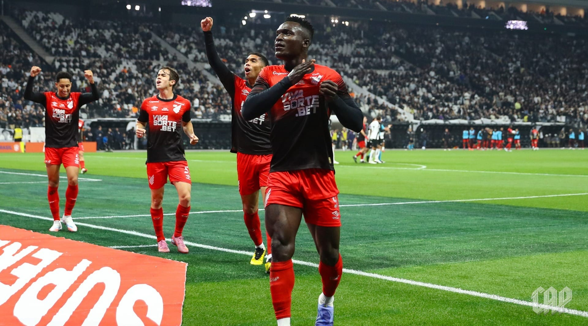
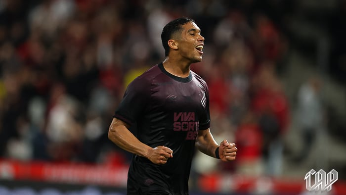

.svg) Elenco do Furacão
Elenco do Furacão
📊 Situação Atual na Série B 2025
Confira a colocação do Club Athletico Paranaense na reta final da Série B.
| Jogador | Posição | Jogos 2025 | Gols 2025 | Valor de Mercado |
|---|---|---|---|---|
| Bruno Zapelli | Meia | 31 | 4 | ~R$25M |
| Lucas Esquivel | Lateral Esquerdo | 26 | 1 | ~R$18,5M |
| Gaston Benavidez | Lateral Direito | 21 | 1 | ~R$19,8M |
| Kevin Viveros | Atacante | 19 | 10 | ~R$35,8M |
| Julimar | Atacante | 11 | 3 | ~R$7,5M |
| Léozinho | Ponta | 30 | 2 | ~R$1M |
| Athletico Paranaense (elenco) | — | — | — | ~R$240M |
📸 Elenco em Ação





💬 Curiosidades do Elenco (2025)
- O Athletico possui o elenco mais valioso da Série B 2025, estimado em cerca de R$ 220,5 milhões.
- Bruno Zapelli é o atleta mais caro da competição.
- O clube já utilizou 33 jogadores em 2025, mostrando a profundidade do plantel.
- Há 10 atletas estrangeiros no elenco do Furacão, o maior número da Série B.
- A média de idade dos jogadores do elenco profissional em 2025 é de cerca de 25,2 anos, mostrando renovação e aposta em talentos jovens.
- A contratação de Kevin Viveros se tornou a mais cara da história do clube — cerca de US$ 5 milhões (~R$ 27,5 milhões) por 70% dos direitos econômicos.
Fontes: Transfermarkt, GE, CNN Brasil, MKT Esportivo (dados atualizados até novembro de 2025).
🏋️ Por Dentro do Vestiário
- 🔴 Média de idade do elenco: 25,8 anos
- ⚫ Média de posse de bola na Série B: 61%
- 🔥 Jogos sem sofrer gols: 12 partidas
- 🏆 Maior sequência de vitórias em 2025: 7 jogos